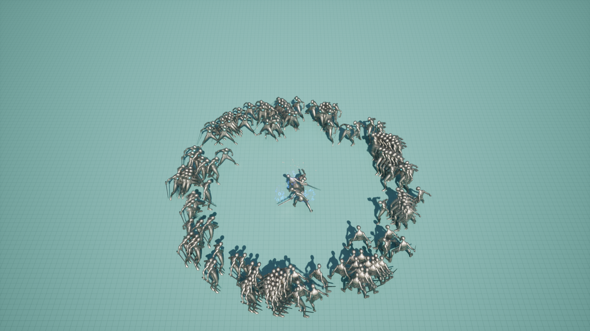
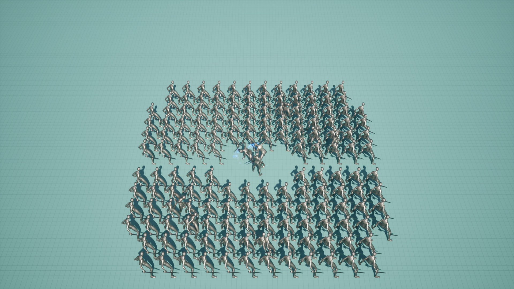

비교 조건과 측정 방법
공격 참여를 2명으로 고정한 상태에서도 나머지 AI가 경계 행동을 수행하면 동시 이동·행동 비용이 늘어납니다. 참여 상한과 행동 판단 갱신 설정을 따로 바꿔 어떤 변경이 프레임 시간과 호출수에 영향을 주는지 비교했습니다.
| 참여 설정 | Engage | Alert | None | Observe |
|---|---|---|---|---|
| U · 경계 제한 전 | 2 | N−2 | 0 | 0 |
| L · 경계 제한 후 | 2 | 6 | N−8 | 0 |
| 갱신 설정 | CombatCritical | CombatSupport | Awareness·Background |
|---|---|---|---|
| 0 | 0.2초 | 0.2초 | 0.2초 |
| 1 | 0.2초 | 0.3초 | 0.3초 |
| 2 | 0.2초 | 0.3초 | 0.5초 |
갱신 설정은 UpdateAIIntentState 서비스에 적용합니다. AIContext·EngageContext 간격은 0.1초로 유지합니다. None은 Observe와 다른 역할이며, 이번 실험은 Idle 애니메이션을 끄는 실험이 아닙니다. 이동·애니메이션·메시의 별도 LOD 정책은 0으로 고정했습니다.
40·80·120·160마리 × U0·U1·U2·L0·L1·L2 × 3회, 총 72회입니다. 160마리 예비 2회는 통계에서 제외했습니다. 매회 새 프로세스를 실행해 준비 10초 뒤 40초를 측정했고 조건 순서를 회차별로 바꿨습니다. 동일 실행 파일·시드11·배치·중앙 플레이어·고정 카메라를 사용했습니다.
1920×1080, D3D12, 품질3, 화면 비율100%, VSync와 프레임 제한 해제 조건입니다. 밀집 배치의 공통 캡슐 반경은 10이며 높이·내비게이션 설정은 고정했습니다. 녹화와 상세 Trace 없이 CSV 및 동일 경량 카운터를 수집했습니다.
Frame·스레드 시간은 각 실행에서 p95를 구한 뒤 3회의 중앙값과 최소–최대를 표시합니다. 호출수는 각 실행의 총 호출수를 측정 시간으로 나눈 초당 평균의 3회 중앙값입니다. 실행을 합쳐 하나의 p95를 만들거나 호출 감소율과 프레임 감소율을 더하지 않습니다.
참여 제한: 규모별 프레임 시간 변화
| 개체 수 | U0 Frame p95 (ms) | L0 Frame p95 (ms) | 시간 감소율 |
|---|---|---|---|
| 40 | 7.4862 | 7.4419 | 0.59% |
| 80 | 11.1277 | 9.5488 | 14.19% |
| 120 | 16.3904 | 12.9912 | 20.74% |
| 160 | 22.3505 | 16.8966 | 24.40% |
갱신 설정 0을 고정한 U0↔L0 비교에서 80·120·160마리의 Frame p95가 약14.2%·20.7%·24.4% 감소했습니다. 40마리는 약0.6% 차이로 전체 프레임 시간의 변화가 작았습니다. 160마리의 U0 범위는 22.2253–22.5182ms, L0는 16.1580–17.2793ms입니다.
이는 참여 제한 정책 전체를 바꾼 통제 비교입니다. 개별 함수나 물리 충돌만의 비용 절감량으로 해석하지 않습니다. 캡슐 반경10은 양쪽에 공통으로 적용했으며 반경 변경이 어떤 조건에서도 성능에 영향을 주지 않는다는 주장은 하지 않습니다.
갱신 빈도: 행동 판단 호출수 감소
| 개체 수 | L0 → L2 호출/초 | 호출 감소율 | Frame p95 감소율 |
|---|---|---|---|
| 40 | 197 → 92.85 | 52.87% | 0.30% |
| 80 | 390 → 173.45 | 55.53% | 1.12% |
| 120 | 582 → 250.4 | 56.98% | -0.60% |
| 160 | 764 → 329.25 | 56.90% | 4.19% |
참여 제한 L을 고정하면 갱신 설정 0→2에서 행동 판단 호출은 약53~57% 줄었습니다. Frame p95 변화는 −0.60~4.19%이며 반복 범위가 겹칩니다. 호출 감소를 같은 크기의 프레임 성능 향상으로 표현하지 않습니다. 음수는 해당 비교에서 시간이 증가했다는 뜻입니다.
U에서는 대부분 Alert가 CombatSupport로 분류되어 모드1·2 모두 0.3초를 사용합니다. L의 None은 대상 인식이 있으면 Awareness로 분류되어 모드2에서 0.5초 간격을 사용할 수 있습니다. 역할 이름과 갱신 tier를 일대일로 단정하지 않습니다.
Game·Render·RHI·GPU 비교
| 160마리 p95 (ms) | U0 | L0 |
|---|---|---|
| Frame | 22.3505 | 16.8966 |
| Game | 22.2948 | 16.8774 |
| Render | 6.4692 | 6.4269 |
| RHI | 9.6599 | 9.2742 |
| GPU | 7.9141 | 8.2816 |
80~160마리에서 Frame과 Game 시간이 가깝고 참여 제한 이후 함께 감소했습니다. 결과는 게임 스레드 쪽 비용이 주요 제한 요인임을 지지합니다. 특정 CharacterMovement 함수의 절감량까지 확정한 것은 아닙니다. 각 p95는 다른 프레임에서 발생할 수 있으므로 스레드별 값을 합산하지 않습니다.
40마리는 Game보다 Frame이 높고 렌더의 critical-path 시간이 Frame과 가까웠습니다. 렌더 제출·대기·동기화 경로의 영향을 구분해야 하며 GPU 단독 병목으로 확정하지 않습니다.
역할·인지·이동·공격 확인
| 확인 대상 | 근거와 범위 |
|---|---|
| 역할 배정 | U는 Engage2·나머지Alert, L은 Engage2·Alert6·나머지None 유지 |
| 인지·타깃 | 전 개체 시야 인식 유지. 참여 타깃은 배정된 개체에 유지되며 None의 참여 타깃은 비워질 수 있음 |
| 이동 | 각 Alert의 실제 이동 발생을 기록. 모든 순간의 원활한 이동을 뜻하지 않음 |
| 공격·피해 | 실행별 공격 시작24~28회·완료8~10회, 플레이어 HP5000에서4640·4670·4690으로 감소 |

공격 참여2·나머지Alert. 실제 실행의 정지 화면이며 연속 동작 영상이 아닙니다.

공격 참여2·경계6·나머지None. 동일 배치·카메라 조건이며 한 장면만으로 전체 동작을 판정하지 않습니다.
전체 24조건의 반복 범위
| 개체 수 | 조건 | Frame p95 중앙값 (ms) | 3회 최소–최대 (ms) | AIIntent 호출/초 |
|---|---|---|---|---|
| 40 | U0 | 7.4862 | 7.4528–7.4937 | 197 |
| 40 | L0 | 7.4419 | 7.4027–7.4572 | 197 |
| 40 | U1 | 7.4350 | 7.4059–7.4433 | 135.25 |
| 40 | L1 | 7.3954 | 7.3604–7.4323 | 135.25 |
| 40 | U2 | 7.4438 | 7.4307–7.4613 | 135.25 |
| 40 | L2 | 7.4195 | 7.4149–7.4573 | 92.85 |
| 80 | U0 | 11.1277 | 11.0379–11.3208 | 390 |
| 80 | L0 | 9.5488 | 9.4452–9.6057 | 390 |
| 80 | U1 | 10.9892 | 10.9102–11.0731 | 265.2 |
| 80 | L1 | 9.7344 | 9.4770–9.8014 | 265.25 |
| 80 | U2 | 10.9409 | 10.8990–11.0433 | 265.2 |
| 80 | L2 | 9.4422 | 9.4392–9.5012 | 173.45 |
| 120 | U0 | 16.3904 | 16.1384–16.3915 | 576 |
| 120 | L0 | 12.9912 | 12.8957–13.0107 | 582 |
| 120 | U1 | 16.3246 | 16.2806–16.4211 | 393.15 |
| 120 | L1 | 13.1590 | 12.9732–13.4735 | 393.2 |
| 120 | U2 | 16.1986 | 16.1241–16.3334 | 393.15 |
| 120 | L2 | 13.0692 | 13.0446–13.0811 | 250.4 |
| 160 | U0 | 22.3505 | 22.2253–22.5182 | 764 |
| 160 | L0 | 16.8966 | 16.1580–17.2793 | 764 |
| 160 | U1 | 22.0822 | 21.9542–22.1076 | 519.15 |
| 160 | L1 | 16.9944 | 16.5936–17.2466 | 523.2 |
| 160 | U2 | 22.0632 | 21.9834–22.1036 | 519.1 |
| 160 | L2 | 16.1889 | 16.1170–16.8842 | 329.25 |
가장 큰 Frame p95의 3회 범위 폭은 160마리 L0의 1.1213ms이며 중앙값 대비 약6.64%입니다. 불리한 값을 제외하지 않고 모든 정식 실행을 포함했습니다.
구현 코드와 적용 범위
참여 Subsystem이 대상별 상한 안에서 역할을 배정하고, 개별 AI는 현재 상태·역할·거리에 따라 행동을 결정합니다. IntervalHelper는 역할·상태 tier로 AIIntentState의 다음 갱신 간격을 선택합니다. 이 실험은 기능의 효과를 같은 실행 파일 안에서 설정을 바꾸어 비교한 것입니다.
공개 main과 실험본은 참여 상한 초기값 및 일부 이동 실패·Investigate 대응 처리가 다릅니다. 모드2를 현재 공개 빌드의 기본 동작으로 검증했다고 설명하지 않습니다. 아래 코드는 측정 실험 프로젝트의 관련 소스이며 실행 파일 해시와 설정은 동봉 자료에 있습니다.
해석 범위와 제한
검증 범위는 이 장치·고정 배치·플레이어 조건에서 역할·인지·이동 발생·공격·피해가 유지된다는 것입니다. 42/72회에서 Alert가 이동 경로 상태를 유지하면서 저속으로 머무는 구간이 있었고, 밀집 배치의 메시 겹침도 보입니다. 자연스러운 군중 회피나 모든 전투 전환의 반응성까지 보증하지 않습니다.
모든 실행에 같은 Niagara emitter 의존 오류가 남아 있어 VFX 전체의 무오류 확인으로 해석하지 않습니다. 이번 자료는 AIContext 분리, Observe 애니메이션 중지, 이동 정책을 함께 끈 최적화의 성과가 아닙니다.
기존 인지 지연 사례는 Sight 후보 필터 변경을 비교합니다. 이 문서는 참여·갱신 설정을 비교하므로 두 사례의 결과와 측정 조건을 합치지 않습니다.
관련 자료와 근거 파일
스텔라 PDF 8–10쪽 · 통합 PDF 9–11쪽 · 기존 참여 구조 시연 · 이번 성능 측정 영상과 구분 · 기존 인지 지연 검증